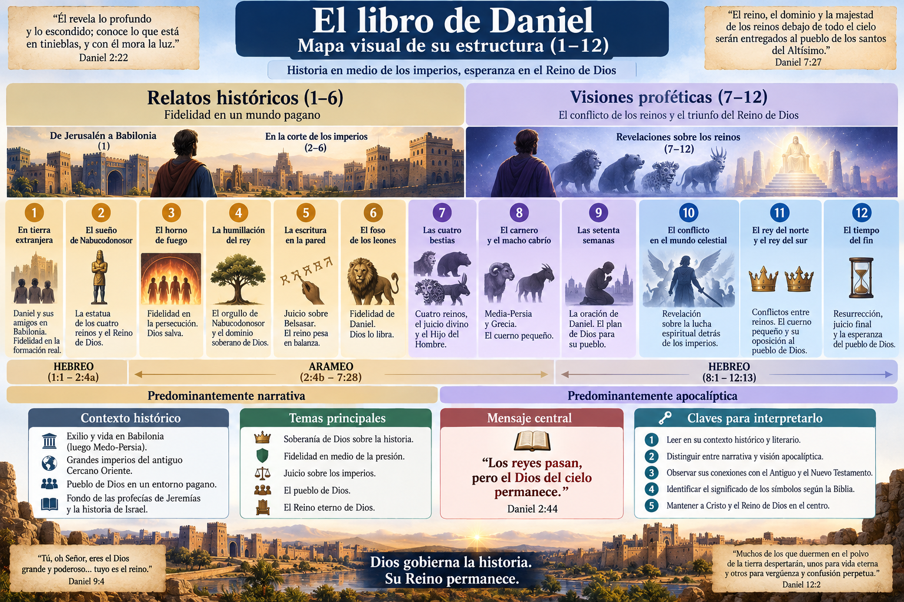
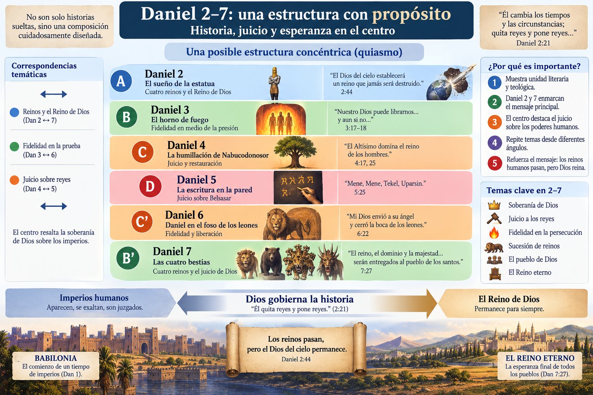
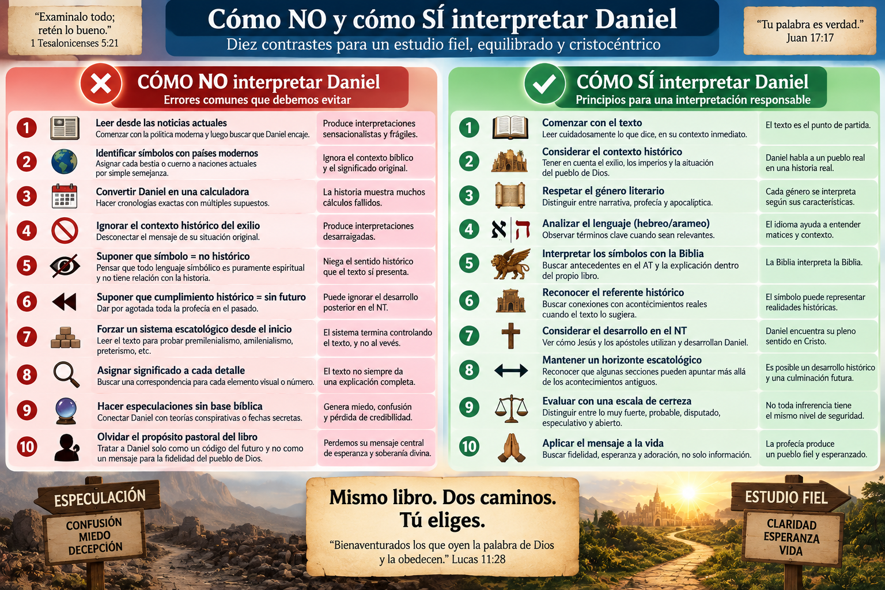

Módulo 3 — Daniel y la esperanza del Reino
Daniel es uno de los libros más importantes para estudiar escatología bíblica. Su lenguaje, imágenes y temas reaparecen de manera decisiva en el Nuevo Testamento, especialmente cuando Jesús habla del “Hijo del Hombre”, cuando se describe la “abominación desoladora”, y cuando Apocalipsis presenta bestias, reinos, persecución y el triunfo final del Reino de Dios.
Pero precisamente por su importancia, Daniel es también uno de los libros donde resulta más fácil comenzar por un sistema escatológico y luego intentar hacer que el texto encaje.
Este estudio hará lo contrario.
Daniel → contexto → género → lenguaje → antecedentes bíblicos → estructura → uso en el NT → principios interpretativos.
Todavía no intentaremos identificar exhaustivamente las cuatro bestias, las setenta semanas, el cuerno pequeño, la abominación desoladora ni construir una cronología del fin. Esas cuestiones pertenecen a los estudios siguientes.
Nuestro objetivo ahora es aprender cómo leer Daniel antes de intentar descifrar Daniel.
Al terminar deberíamos poder responder:
Y sobre todo:
¿Qué quería comunicar Dios mediante Daniel antes de preguntarnos qué detalles de Daniel podrían referirse todavía a nuestro futuro?
El libro comienza con una tragedia histórica.
“En el tercer año del reinado de Joacim, rey de Judá, Nabucodonosor, rey de Babilonia, fue a Jerusalén y la sitió.”
Daniel 1:1
Jerusalén está siendo sometida.
El pueblo del pacto está entrando en una crisis devastadora.
El templo será destruido.
La monarquía davídica parece derrotada.
Jóvenes judíos son llevados a Babilonia.
Y Daniel se encuentra viviendo dentro del imperio que ha conquistado a su pueblo.
Por eso la pregunta fundamental del libro no comienza siendo:
“¿Cuándo ocurrirá el fin?”
La pregunta más profunda es:
¿Quién gobierna realmente cuando los imperios parecen gobernarlo todo?
Esa pregunta atraviesa prácticamente todo Daniel.
Hay una pequeña frase en Daniel 1 que fácilmente puede pasar inadvertida.
Daniel 1:2 dice que:
el Señor entregó a Joacim en manos de Nabucodonosor.
Desde la perspectiva política:
Babilonia conquistó Jerusalén.
Desde la perspectiva teológica de Daniel:
Dios seguía siendo soberano incluso sobre esa derrota.
Esto se convierte en una de las columnas del libro.
Daniel 2:21 declara que Dios:
“quita reyes y pone reyes”.
Daniel 4 desarrollará dramáticamente esta idea.
Por tanto:
El propósito fundamental de Daniel no es satisfacer curiosidad cronológica.
Es mostrar que:
los imperios humanos aparecen, crecen y desaparecen, pero el Dios del cielo permanece soberano sobre la historia.
Esta observación será importantísima cuando lleguemos a las visiones.
Las bestias no deben estudiarse independientemente del Dios que finalmente las juzga.
Daniel se desarrolla principalmente en el contexto de dos grandes poderes:
Babilonia y posteriormente Medo-Persia.
El trasfondo comienza con la expansión babilónica sobre Judá y el exilio.
Esto importa porque muchas imágenes posteriores del libro describen precisamente:
Daniel no recibe sus visiones en un vacío religioso.
Las recibe siendo un judío exiliado que vive bajo gobiernos paganos.
Por eso existe una tensión fundamental:
Jerusalén parece débil. Los imperios parecen invencibles.
Pero Daniel afirma exactamente lo contrario en perspectiva divina:
los imperios son temporales. el Reino de Dios es permanente.
Una división sencilla del libro es:

| Sección | Contenido predominante |
|---|---|
| Daniel 1–6 | Relatos históricos |
| Daniel 7–12 | Visiones proféticas/apocalípticas |
No significa que Daniel 1–6 carezca de profecía.
Daniel 2, por ejemplo, contiene una visión extraordinariamente importante.
Pero literariamente existe un cambio evidente.
Encontramos historias como:
Predominan:
Por eso no podemos interpretar todo Daniel exactamente de la misma manera.
Cuando Daniel 6 dice que Daniel fue arrojado al foso de los leones, el relato pretende comunicar acontecimientos mediante narrativa.
Pero cuando Daniel 7 describe:
“cuatro enormes bestias”
que salen del mar, el propio capítulo nos enseña que esas bestias representan realidades políticas.
Daniel 7:17:
“Estas cuatro enormes bestias son cuatro reyes...”
Aquí tenemos una regla interpretativa fundamental:
Cuando el propio texto interpreta un símbolo, esa interpretación tiene prioridad.
No necesitamos inventar qué significa una bestia.
Daniel nos lo dice.
Bestias → poderes/reyes/reinos.
Pero esto no significa que cada detalle de cada bestia tenga necesariamente una correspondencia independiente.
Ese es uno de los errores frecuentes al interpretar literatura apocalíptica.
La palabra “apocalipsis” proviene del griego:
ἀποκάλυψις — apokálypsis
y significa fundamentalmente:
revelación / descubrimiento / quitar el velo.
La literatura apocalíptica bíblica utiliza frecuentemente:
Pero hay que entender algo importante.
La apocalíptica no intenta oscurecer la realidad.
Intenta revelar la realidad desde la perspectiva de Dios.
Por ejemplo, un imperio puede verse desde abajo como:
glorioso, civilizado, poderoso.
Daniel 7 puede mostrarlo desde arriba como:
una bestia.
La imagen interpreta teológicamente la historia.
Este principio será fundamental durante todo nuestro estudio de Daniel y posteriormente Apocalipsis.
Supongamos que encontramos:
🦁 una bestia semejante a un león.
Una lectura excesivamente literalista podría preguntar inmediatamente:
“¿Qué país moderno tiene un león en su escudo?”
Ese método es extremadamente peligroso.
¿Por qué?
Porque ignora:
Los símbolos deben interpretarse primero mediante el mundo simbólico de la Biblia, no mediante titulares contemporáneos.
El orden debería ser:
Daniel → contexto de Daniel → AT → explicación interna → NT → posible aplicación histórica posterior.
No:
noticias actuales → Daniel.
Este es uno de los rasgos más interesantes del libro.
Daniel utiliza:
Daniel 1:1–2:4a
y nuevamente:
Daniel 8–12
Daniel 2:4b–7:28
El arameo era una importante lengua internacional del antiguo Cercano Oriente.
Esto significa que la estructura lingüística del libro no coincide exactamente con la división simple:
historias / profecías.
Porque Daniel 7 es apocalíptico, pero está escrito en arameo.
Eso debería hacernos cautelosos antes de construir explicaciones demasiado simples.

Muchos estudiosos han observado una posible estructura concéntrica en Daniel 2–7:
A — Daniel 2: cuatro reinos y Reino de Dios
B — Daniel 3: liberación de los fieles
C — Daniel 4: juicio sobre un rey
C' — Daniel 5: juicio
sobre un rey
B' — Daniel 6: liberación de Daniel
A' — Daniel 7: cuatro
reinos y Reino de Dios
Es una propuesta literaria bastante convincente.
Daniel 2–7 parece haber sido cuidadosamente organizado para mostrar paralelos temáticos.
Especialmente:
Daniel 2 ↔ Daniel 7
Ambos presentan una sucesión de poderes humanos seguida por el dominio decisivo de Dios.
Pero todavía no identificaremos todos esos poderes.
Eso corresponde a los estudios posteriores.
Aquí aparece una regla metodológica importantísima.
Daniel 2 presenta una enorme estatua.
Daniel 7 presenta cuatro bestias.
Aunque las imágenes son diferentes, ambos capítulos presentan secuencias de reinos y finalmente el gobierno de Dios.
Daniel 2 culmina con:
“el Dios del cielo establecerá un reino que jamás será destruido”.
Daniel 7 culmina con el dominio dado al personaje llamado:
“uno semejante a un hijo de hombre”.
Por tanto, antes de identificar cada reino debemos reconocer el movimiento general.
Daniel contrapone:
reinos humanos temporales
con
el Reino permanente de Dios.
Ese contraste es más claro que muchos detalles cronológicos discutidos posteriormente.
Daniel 7:2–3 describe los cuatro vientos agitando:
“el gran mar”.
Y las bestias emergen del mar.
Esto probablemente no es una decoración arbitraria.
En el Antiguo Testamento, el mar puede representar fuerzas amenazantes, caos y oposición.
Podemos recordar textos como:
Pero debemos ser cuidadosos.
Daniel utiliza imágenes relacionadas con el caos y las fuerzas hostiles conocidas en el mundo bíblico.
Determinar exactamente cuánto debemos importar de cada antecedente del “mar” a Daniel 7.
No debemos convertir automáticamente:
mar = una única definición simbólica universal.
Los símbolos bíblicos dependen del contexto.
Aquí aparece una de las imágenes teológicamente más profundas de Daniel.
Los imperios aparecen como:
bestias.
Pero el Reino culmina asociado con:
“uno semejante a un hijo de hombre”.
Arameo:
כְּבַר אֱנָשׁ — kevar ʾenash
aproximadamente:
“como un hijo de hombre” / “como un ser humano”.
La oposición literaria es extraordinaria:
gobierno bestial vs. gobierno verdaderamente humano bajo Dios.
Todavía no desarrollaremos completamente la identidad del Hijo del Hombre; merece tratamiento propio.
Pero hay algo que podemos afirmar.
Daniel 7 conecta la derrota de los poderes bestiales con la instauración del dominio divino y la figura semejante a un hijo de hombre.
Y esta imagen será fundamental para comprender a Jesús.
En los Evangelios, Jesús utiliza repetidamente la expresión:
“Hijo del Hombre”.
No toda aparición tiene que funcionar exactamente igual, pero Daniel 7 constituye un antecedente fundamental.
Uno de los ejemplos más claros aparece durante el juicio de Jesús.
Marcos 14:62:
“verán al Hijo del Hombre sentado a la diestra del Poderoso, y viniendo en las nubes del cielo.”
Aquí aparecen ecos particularmente fuertes de:
Daniel 7:13–14 y Salmo 110:1.
Jesús aplica a sí mismo el lenguaje de Daniel 7.
Esto significa que la interpretación cristiana de Daniel no puede detenerse únicamente en los acontecimientos anteriores a Cristo.
Daniel desemboca en la cristología del Nuevo Testamento.
Este será un punto importante más adelante.
Daniel 7:13 dice que uno semejante a hijo de hombre:
venía con las nubes del cielo.
Nuestra reacción moderna puede ser imaginar inmediatamente:
una venida desde el cielo hacia la tierra.
Pero debemos mirar la dirección de la escena.
El personaje llega:
hasta el Anciano de días.
Es decir, dentro de la visión de Daniel el movimiento parece dirigirse hacia el tribunal celestial.
En Daniel 7, la escena inmediata es celestial y está relacionada con entronización, autoridad y dominio.
Cómo se relaciona exactamente esta escena con las distintas referencias neotestamentarias a la venida de Cristo.
No resolveremos todavía esa cuestión.
❓ Queda abierta para estudios posteriores.
Daniel no apareció aislado.
Sus grandes temas vienen de la historia bíblica anterior.
Entre ellos:
Israel vive las consecuencias de su infidelidad.
Daniel se encuentra fuera de Jerusalén.
La monarquía davídica parece interrumpida.
Jerusalén y el santuario ocupan un lugar crucial.
Jeremías resulta especialmente importante.
Daniel 9:2 menciona explícitamente:
“los libros” y la profecía de Jeremías sobre los años de desolación de Jerusalén.
Por eso Daniel debe interpretarse dentro de la historia de Israel.
Jeremías había anunciado un período de dominio babilónico y posteriormente restauración.
Daniel 9 muestra a Daniel estudiando esa profecía.
Esto nos enseña algo fascinante:
Daniel mismo interpreta profecía mediante profecía anterior.
Es decir, el libro nos ofrece parcialmente su propio método hermenéutico.
Daniel:
Esto es muy diferente de tratar la profecía como un rompecabezas matemático.
Daniel 9 es quizá uno de los correctivos más importantes para cierta escatología moderna.
Daniel descubre información profética.
¿Y qué hace?
No crea primero un gráfico.
Ora.
Confiesa:
“Hemos pecado y cometido iniquidad...”
La revelación escatológica bíblica debería producir:
Si nuestro estudio profético produce únicamente especulación, probablemente hemos perdido parte del propósito pastoral del texto.
Aquí comienza una cuestión metodológica central.
Daniel contiene profecías que parecen relacionarse claramente con acontecimientos históricos posteriores a Daniel.
Pero también contiene expectativas de:
Daniel 12:2 declara:
“Muchos de los que duermen en el polvo de la tierra despertarán, unos para vida eterna y otros para vergüenza y confusión perpetua.”
Esto hace difícil reducir todo Daniel simplemente a acontecimientos políticos antiguos.
Daniel contiene elementos claramente relacionados con la historia de Israel y los imperios antiguos.
Daniel también alcanza temas que el NT relacionará con la esperanza escatológica definitiva, particularmente la resurrección.
Por eso necesitamos evitar dos extremos.
Una lectura puede intentar explicar prácticamente cada elemento únicamente mediante acontecimientos anteriores o cercanos al período del segundo templo.
Este enfoque tiene una fortaleza real:
obliga a tomar seriamente el contexto histórico.
Pero puede volverse reduccionista si no permite que Daniel alcance las dimensiones que posteriormente reconoce el NT.
Por ejemplo, la resurrección de Daniel 12 difícilmente puede tratarse simplemente como un cambio político ordinario sin argumentos adicionales.
Hasta dónde llegan los cumplimientos históricos inmediatos de determinadas visiones.
No debemos ignorar el horizonte escatológico que el propio libro abre.
El extremo contrario consiste en leer:
como acontecimientos todavía futuros para nosotros.
Esto también presenta dificultades.
Porque Daniel habla dentro de circunstancias históricas concretas.
Algunas secciones contienen descripciones sorprendentemente relacionadas con conflictos del mundo helenístico y la persecución del pueblo judío.
Ignorar ese contexto puede transformar Daniel en un código desligado de sus primeros lectores.
Una interpretación responsable debe preguntar primero:
¿Qué podía comunicar esta visión dentro del horizonte histórico de Daniel y de sus primeros lectores?
Solo después preguntaremos:
¿Cómo desarrolla el NT ese horizonte?
Sí, pero debe demostrarse textualmente.
Este principio será muy importante.
En la Biblia, acontecimientos anteriores pueden establecer patrones que posteriormente reaparecen.
Por ejemplo:
éxodo → nuevos actos de liberación
David → esperanza de un rey davídico
Babilonia → imagen posterior del poder humano rebelde
Por tanto, es posible que determinados acontecimientos en Daniel tengan:
Pero no debemos asumir automáticamente “doble cumplimiento” cada vez que una profecía nos resulte difícil.
La Escritura reutiliza patrones históricos anteriores.
Qué profecías específicas de Daniel funcionan de esa manera.
Cada texto tendrá que estudiarse individualmente.
Daniel utiliza lenguaje relacionado con una:
“abominación desoladora”.
Más adelante veremos su contexto preciso.
Pero siglos después, Jesús vuelve a utilizar esta expresión:
“Por tanto, cuando vean en el lugar santo la abominación desoladora de que habló el profeta Daniel...”
Mateo 24:15
Esto genera una cuestión interpretativa fascinante.
Si determinado lenguaje de Daniel tuvo una manifestación histórica antes de Jesús, ¿por qué Jesús puede volver a utilizarlo?
Una posibilidad es que:
un acontecimiento histórico haya establecido un patrón de profanación que posteriormente pueda reaparecer.
Pero no adelantaremos:
❓ Queda abierto.
Será estudiado cuando corresponda.
Daniel contiene números y períodos famosos:
Dos errores son posibles.
Suponer que todos son puramente simbólicos.
Suponer que todos funcionan como cálculos cronológicos modernos exactos.
El género apocalíptico puede utilizar números con fuerte significado simbólico, pero también puede relacionarlos con períodos históricos reales.
Por eso nuestra regla será:
No decidir de antemano.
Cada número deberá analizarse según:
contexto + género + paralelos + antecedentes bíblicos + cumplimiento histórico posible.
Daniel 12 contiene una advertencia indirecta importante para nosotros.
Las visiones no fueron dadas para permitir una manipulación ilimitada de fechas.
La historia cristiana contiene numerosos intentos fallidos de utilizar Daniel para calcular:
Cuando una interpretación depende principalmente de:
“sumamos estos números, cambiamos días por años, comenzamos desde esta fecha y obtenemos nuestro siglo...”
debemos exigir una justificación textual muy fuerte.
Cualquier cálculo que dependa de múltiples supuestos que el texto nunca establece.
Daniel 8 ofrece un ejemplo excelente.
La visión presenta:
Pero el ángel proporciona identificaciones.
Daniel 8:20–21 relaciona explícitamente determinadas figuras con:
Media y Persia y Grecia.
Esto nos proporciona otra regla fundamental.
La interpretación inspirada dentro del propio texto controla nuestra interpretación del símbolo.
No podemos sustituir arbitrariamente una identificación proporcionada por Daniel por una nación moderna.
Aquí surge una dificultad.
A veces Daniel explica:
la figura principal,
pero no necesariamente cada detalle visual.
Eso significa que debemos establecer niveles de seguridad.
Ejemplo metodológico:
Símbolo identificado directamente por el texto: 🟢 muy fuerte.
Detalle relacionado mediante contexto cercano: 🟡 probable.
Detalle inferido mediante paralelos bíblicos: 🟠 puede ser disputado.
Correspondencia moderna sin apoyo textual: 🔴 especulativa.
Este sistema será utilizado durante todo el módulo.
Daniel 10 resulta especialmente llamativo.
Aparecen figuras como:
La historia visible parece tener una dimensión invisible.
Pero nuevamente debemos evitar excesos.
Daniel presenta conflicto celestial asociado con acontecimientos históricos.
La naturaleza exacta de estos “príncipes” y cómo debemos sistematizar la relación entre seres espirituales y naciones.
Intentar identificar un “demonio territorial” específico detrás de cada nación moderna basándonos únicamente en Daniel 10.
El texto dice más que un naturalismo cerrado.
Pero dice menos que muchos sistemas modernos de “guerra espiritual”.
Daniel muestra simultáneamente dos niveles:
reyes, guerras, persecución, imperios.
ángeles, tribunal, libros, Anciano de días, decretos divinos.
Esta combinación enseña una verdad teológica central:
La historia visible no explica toda la realidad.
Los fieles pueden parecer derrotados en la tierra mientras el tribunal celestial ya ha pronunciado juicio sobre sus perseguidores.
Ese mensaje tenía enorme fuerza para comunidades perseguidas.
Y posteriormente tendrá enorme importancia para Apocalipsis.
Apocalipsis reutiliza muchísimo lenguaje de Daniel.
Especialmente:
Por tanto:
Daniel constituye uno de los antecedentes principales de Apocalipsis.
Pero metodológicamente debemos ir:
Daniel → Apocalipsis
antes que:
Apocalipsis → imponer una lectura sobre Daniel.
Primero debemos comprender qué significaban las imágenes en Daniel.
Después veremos cómo Juan las reutiliza.
Daniel 7 describe varias bestias con características diferentes.
Apocalipsis 13 describe una bestia que posee características semejantes a:
Juan parece reutilizar y combinar las imágenes de Daniel.
Esto nos enseña algo importantísimo sobre simbolismo bíblico.
Un símbolo puede ser reutilizado y desarrollado por un autor bíblico posterior.
Por eso:
El NT interpreta Daniel tipológica y escatológicamente en algunos contextos.
Pero esto tampoco nos autoriza a hacer asociaciones ilimitadas.
El desarrollo debe estar demostrado por el propio texto bíblico.
Adoptaremos esta regla durante todo el curso:
Cuando encontremos un símbolo en Apocalipsis, preguntaremos:
“¿Dónde apareció anteriormente en la Biblia?”
Cuando encontremos una imagen en Daniel, preguntaremos:
“¿Qué antecedentes tiene en la Ley, Salmos y Profetas?”
Esto evita interpretar símbolos según imaginación moderna.
Por ejemplo:
bestia
no debería significar primero:
“una tecnología moderna”.
Debemos buscar primero:
Daniel, profetas, lenguaje bíblico del poder imperial.
Sin decidir todavía cada texto, podemos reconocer varias maneras en que los cristianos han interpretado Daniel.
Busca los referentes principales en:
Toma seriamente el contexto histórico.
Puede reducir demasiado el horizonte escatológico posterior.
Reconoce referentes históricos concretos pero considera que las visiones avanzan hacia el Reino de Dios y encuentran desarrollo decisivo en Cristo.
Permite integrar contexto histórico y recepción neotestamentaria.
Puede convertirse en una categoría demasiado amplia si no especificamos cuidadosamente qué cumple Cristo y qué permanece futuro.
Considera que determinadas secciones, especialmente algunas partes finales, describen acontecimientos todavía futuros relacionados con la consumación.
Toma seriamente los elementos escatológicos que parecen superar acontecimientos antiguos.
Puede desconectar demasiado fácilmente las visiones de su contexto original.
Ven los imperios y persecuciones como patrones recurrentes del conflicto entre el Reino de Dios y poderes humanos rebeldes.
Reconocen la capacidad del lenguaje apocalíptico para describir patrones transhistóricos.
Pueden diluir referentes históricos concretos.
Todavía no podemos elegir un sistema completo.
Pero sí podemos establecer una metodología.
La lectura contextualmente más fuerte parece ser aquella capaz de mantener simultáneamente:
Daniel habla realmente sobre imperios y acontecimientos relacionados con Israel.
Los acontecimientos representan el conflicto entre gobierno humano rebelde y Reino divino.
Jesús y el NT reutilizan explícitamente Daniel.
Daniel alcanza juicio, Reino y resurrección.
Por tanto, nuestra metodología provisional será:
histórico → literario → canónico → cristológico → escatológico.
No empezaremos por:
“preterista o futurista”.
Empezaremos por el texto.

1. Leer Daniel directamente desde las noticias.
🔴 Muy débil metodológicamente.
2. Identificar cada símbolo con un país moderno por semejanza visual.
🔴 Especulativo sin evidencia textual.
3. Ignorar el contexto del exilio y del segundo templo.
🔴 Produce interpretaciones desarraigadas.
4. Suponer que símbolo significa “no histórico”.
Incorrecto. Un símbolo puede representar una realidad histórica.
5. Suponer que cumplimiento histórico significa “sin significado futuro”.
Tampoco necesariamente.
6. Construir cronologías antes de interpretar las unidades literarias.
Metodológicamente peligroso.
7. Convertir toda incertidumbre en certeza doctrinal.
Daniel mismo contiene momentos donde el profeta queda perplejo.
Daniel 8:27 dice que estaba:
“espantado a causa de la visión, y no la entendía”.
Hay lugar bíblico para decir:
❓ No estamos seguros.
Supongamos que aparece un gobernante moderno que:
Podría recordarnos imágenes de Daniel.
Pero:
semejanza temática ≠ cumplimiento profético demostrado.
Podemos decir:
🟡 “presenta un patrón semejante”.
Pero no necesariamente:
🔴 “Daniel estaba profetizando específicamente sobre esta persona”.
Esta distinción protegerá nuestro estudio de sensacionalismo.
A partir de este estudio utilizaremos consistentemente:
Explícito en el texto o sostenido por evidencia contextual muy sólida.
La mejor explicación disponible, aunque existen alternativas razonables.
Existen varias interpretaciones cristianas plausibles.
Depende de conexiones débiles o supuestos externos.
El estudio actual todavía no proporciona suficiente evidencia para decidir.
Esta última categoría es importante.
No tenemos obligación de resolver todo inmediatamente.
Después de toda esta metodología podemos perder de vista lo esencial.
Daniel no fue escrito principalmente para producir expertos en diagramas proféticos.
Fue escrito para fortalecer la fidelidad del pueblo de Dios bajo poderes que parecían invencibles.
El mensaje repetido es:
Dios reina.
Los reyes pasan.
Los imperios pasan.
Las bestias son juzgadas.
Los santos sufren.
Pero finalmente:
el Reino pertenece a Dios.
Daniel 7:27 resume la esperanza:
“El reino, el dominio y la majestad de los reinos debajo de todo el cielo serán entregados al pueblo de los santos del Altísimo”.
Daniel ve:
uno semejante a hijo de hombre.
Jesús adopta:
Hijo del Hombre.
Daniel ve:
dominio eterno.
Jesús anuncia:
Reino de Dios.
Daniel ve:
persecución de los santos.
Jesús prepara:
discípulos perseguidos pero perseverantes.
Daniel ve:
resurrección.
Jesús declara:
que él es la resurrección y la vida.
Por eso Daniel no debe convertirse principalmente en un catálogo de personajes siniestros.
Para el cristiano, su trayectoria culmina fundamentalmente en:
la victoria y el Reino del Hijo del Hombre.
Cuando estudiemos una profecía de Daniel seguiremos este recorrido:
TEXTO ↓ ¿Qué dice realmente?
CONTEXTO ↓ ¿Dónde estamos históricamente?
GÉNERO ↓ ¿Narrativa, profecía, visión apocalíptica?
LENGUAJE ↓ ¿Hebreo/arameo relevante?
SÍMBOLOS ↓ ¿Los explica Daniel?
ANTECEDENTES AT ↓ ¿De dónde vienen las imágenes?
REFERENTE HISTÓRICO ↓ ¿Existe una correspondencia clara?
DESARROLLO NT ↓ ¿Jesús o los apóstoles reutilizan el texto?
HORIZONTE ESCATOLÓGICO ↓ ¿Qué parece cumplido y qué podría permanecer abierto?
GRADO DE CERTEZA ↓ 🟢 / 🟡 / 🟠 / 🔴 / ❓
Este será nuestro método para todo el módulo.
| Afirmación | Certeza |
|---|---|
| Daniel debe interpretarse dentro del contexto del exilio y los imperios antiguos | 🟢 |
| El Reino soberano de Dios constituye un tema central | 🟢 |
| Daniel utiliza narrativa y literatura apocalíptica | 🟢 |
| Muchos símbolos representan realidades históricas/políticas | 🟢 |
| Daniel 2 y 7 presentan importantes paralelos | 🟢 |
| Daniel es fundamental para comprender el lenguaje escatológico del NT | 🟢 |
| Jesús utiliza explícitamente imágenes de Daniel | 🟢 |
| Todo Daniel se agotó antes de Cristo | 🟠 |
| Todo Daniel describe exclusivamente acontecimientos todavía futuros | 🔴 |
| Algunos acontecimientos pueden funcionar como patrones de realidades posteriores | 🟡 |
| Cada detalle simbólico posee una correspondencia histórica independiente | 🔴 |
| Podemos construir ya una cronología completa del fin desde Daniel | 🔴 |
Todavía no hemos determinado:
❓ ¿Cuáles son exactamente los cuatro reinos de Daniel 2 y 7?
❓ ¿Qué representa exactamente el cuerno pequeño en cada visión?
❓ ¿Cómo debe interpretarse Daniel 7:13–14 en relación con la venida de Cristo?
❓ ¿Cómo funcionan las setenta semanas?
❓ ¿Quién es el personaje central de Daniel 9:26–27?
❓ ¿Qué cumplimiento tuvo la abominación desoladora?
❓ ¿Existe además un cumplimiento futuro?
❓ ¿Cómo interpretar los 1.290 y 1.335 días?
❓ ¿Qué partes de Daniel permanecen todavía futuras desde nuestra perspectiva?
No resolverlas ahora no es una debilidad.
Es exactamente lo que exige nuestro método.
Primero aprendemos a leer.
Después interpretaremos cada pasaje.
La clave para interpretar Daniel no consiste en encontrar primero nuestro sistema escatológico favorito.
Consiste en reconocer qué clase de libro tenemos delante.
Daniel nace del mundo del:
exilio, imperios, persecución, fidelidad y esperanza.
Utiliza:
historia + profecía + apocalíptica.
Sus símbolos no son invitaciones a la imaginación ilimitada.
Están arraigados en:
el Antiguo Testamento, la historia de Israel y las explicaciones internas del propio libro.
Y cuando llegamos al Nuevo Testamento descubrimos que Jesús y los apóstoles no abandonan Daniel.
Lo desarrollan alrededor de:
Cristo, el Hijo del Hombre, el Reino, el juicio y la esperanza de resurrección.
Por eso la gran pregunta de Daniel no es:
“¿Podemos descubrir quién será cada personaje del fin?”
Es algo mucho más profundo:
¿Quién gobierna la historia cuando los poderes humanos parecen haber ganado?
La respuesta de Daniel es inequívoca:
Los imperios tienen fecha de vencimiento.
El Reino de Dios no.
Con este estudio podemos añadir al mapa una nueva base metodológica:
Daniel
→ 🟢 contexto histórico real
→ 🟢 lenguaje profético/apocalíptico
→ 🟢 imperios humanos temporales
→ 🟢 soberanía divina
→ 🟢 juicio de los poderes rebeldes
→ 🟢 Reino permanente de Dios
→ 🟢 Hijo del Hombre → conexión explícita con Jesús
→🟢 resurrección → horizonte escatológico
→ 🟡 patrones históricos que pueden recibir desarrollo posterior
→❓ cronología detallada
→ ❓ identificación completa de reinos y cuernos
→ ❓ alcance exacto de cumplimientos históricos/futuros
Principio incorporado al Mapa:
No se interpretará Daniel desde un sistema previo. Cada visión deberá pasar primero por contexto histórico, género, explicación interna, antecedentes del AT y desarrollo en el NT.
Esto nos deja preparados para entrar en las visiones concretas sin haber decidido de antemano qué sistema tienen que demostrar.